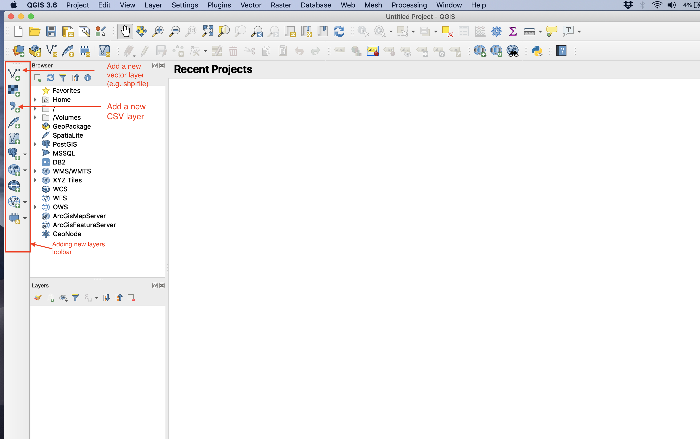
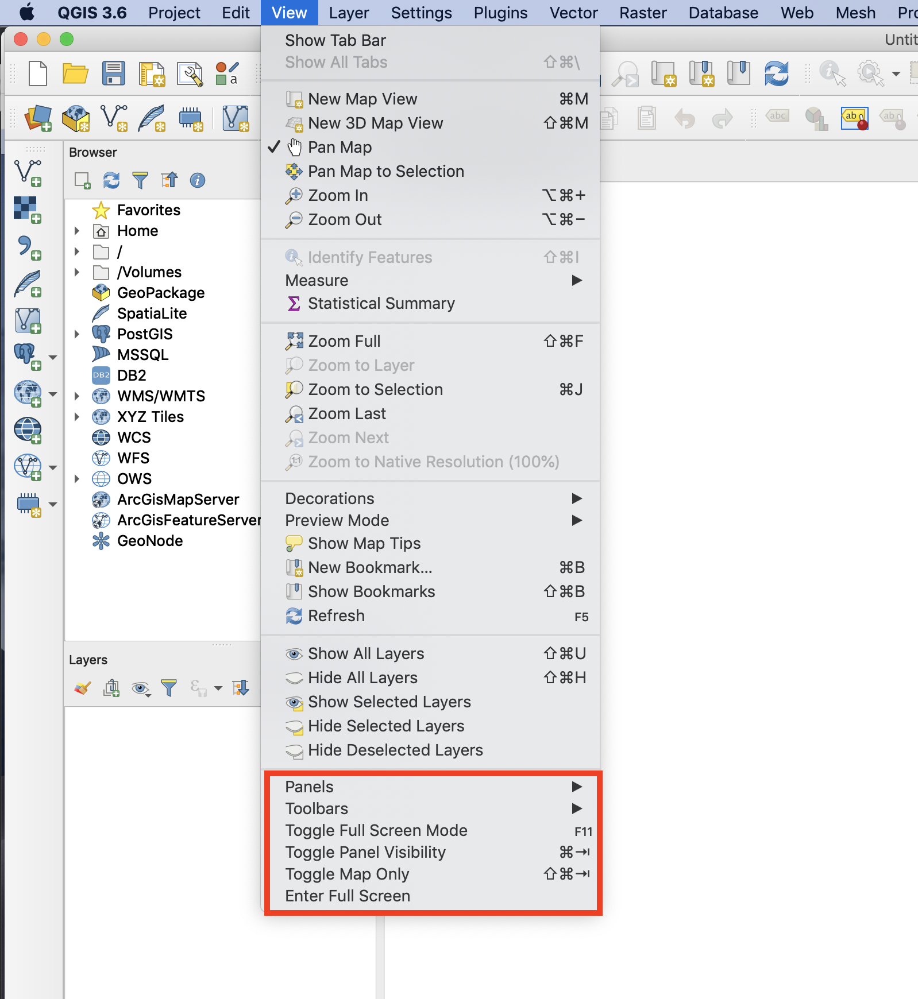
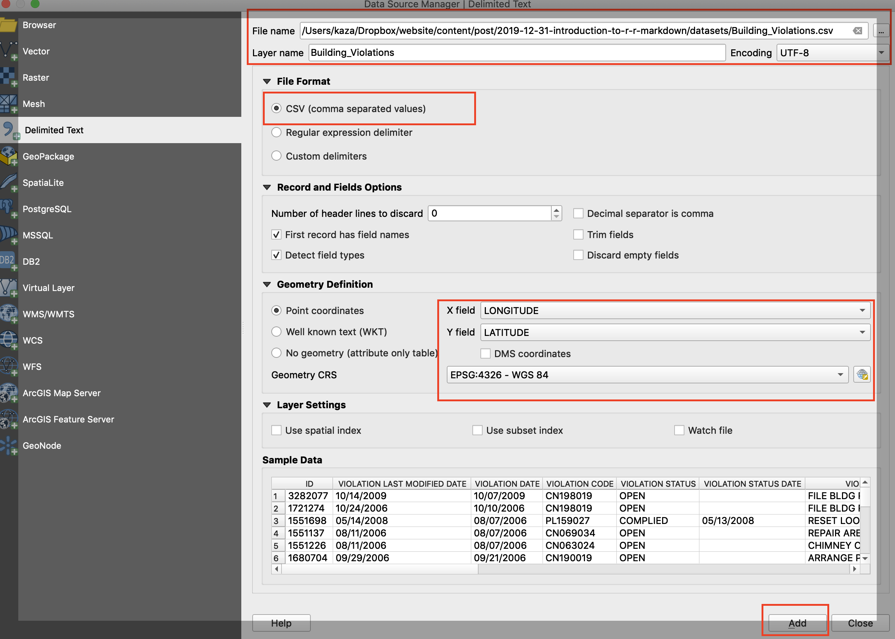

Starting with QGIS

Preliminaries
Strictly speaking, we won’t use QGIS much in this course. However, there are occassions where it may be useful to use a GIS package with a GUI to quickly visualise spatial data and troubleshoot some issues. ESRI’s products work fine if you are used to them, and you can skip this tutorial. On the other hand, QGIS is not limited to Windows and is free.
You should download and install QGIS on your computer, with instructions depending on the configuration. Unless you prefer bleeding edge version, I recommend that you install the stable version.
Download Data
Download the latest building violations data from building violations data from the Chicago Open Data Portal. For convenience, a local copy downloaded in 2019 is stored here.
Getting Started with QGIS
Once you open QGIS, the windows and toolbars that show up depend on your computer configuration. But in general, it should look like the following and you can use the add new layers toolbar to add the downloaded dataset.

Should you have trouble locating the right panels and toolbars explore toggling some of them from the View menu as below.

Because, the building violations are a text delimted file, pick the button to add csv file and select the right paths. Make sure to check the right X and Y coordinates. Logitude is the X coordinate, despite the convention of writing the Latitude first. Please note that Lat/Long are usually in a coordinate system called WGS84. Please confirm with the documentation on the data source that this is indeed the case. Otherwise, geographic operations will result in erroneous outputs.

Adding this layer, results in adding ~1.6 million points in the city of Chicago, where violations are recorded.
One of the key features of a GUI based GIS is to allow for styling of layers. Use the following video to get some sense of how to style the violations layer based on the status of the violation.
If the videos appear blurry, your video playback on YouTube might be set too low. Increase the playback resolution to 720p or 1080p in the Settings with in the YouTube player.
Exercise
- This is a particularly bad example of a map. List out the ways it can be imporved.
- Add other layers to the map and style them, to give some context to Chicago (such as Roads)
Print Composer
To create a proper map with legend, north arrow and scale, you need to use a print composer. You can use the following video to get started.
Additional Resources
There are many resources on the web that will get you familiar with QGIS. If you have some familarity with ESRI products, there are many analogous functions and workflows in QGIS and should be relatively straightforward to figure out.
- Ujval Ghandi’s QGIS tutorials and tips
- The official training manual of QGIS